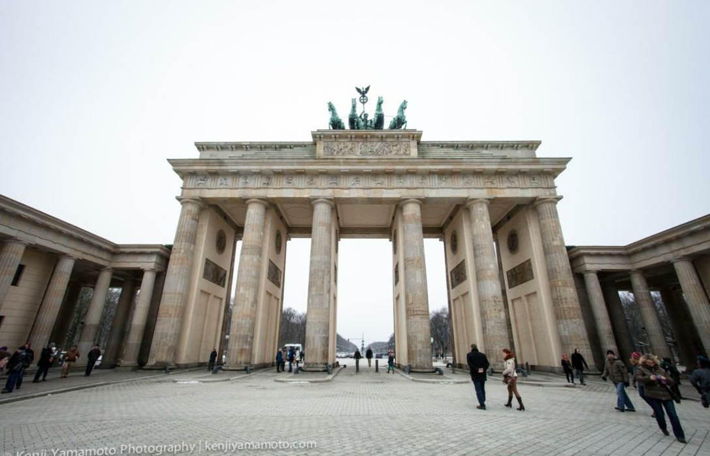
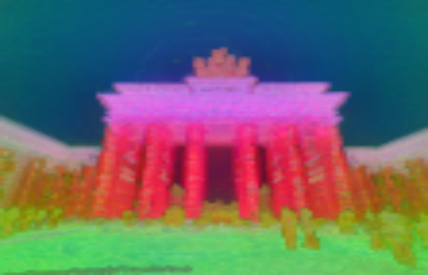
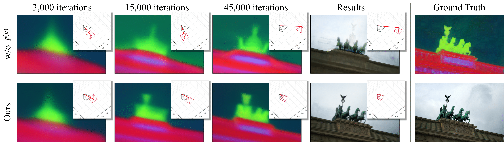
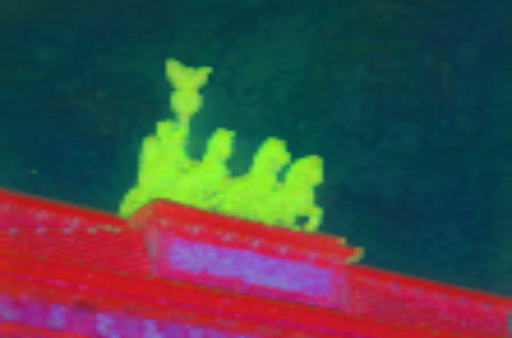
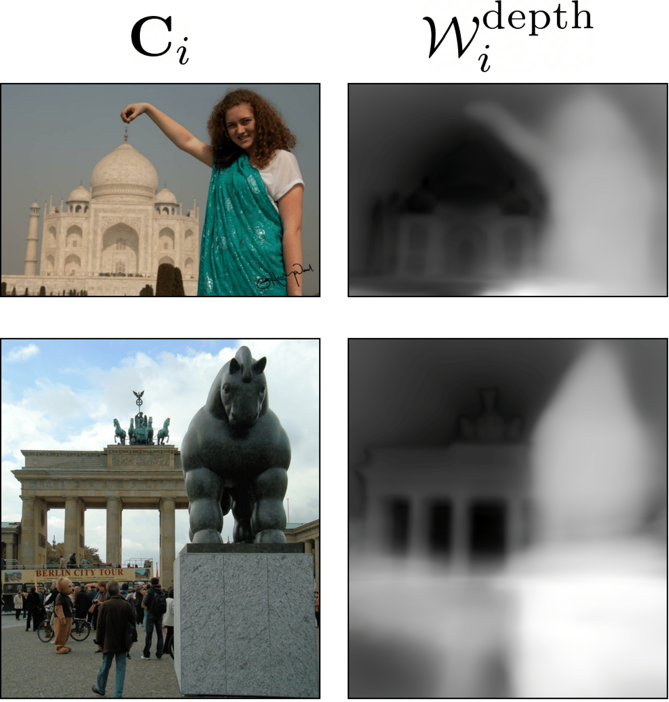

UP-NeRF: Unconstrained Pose-Prior-Free Neural Radiance Fields
GT RGB
GT Feature
Visualization of BARF
Visualization of UP-NeRF
Abstract
Neural Radiance Field (NeRF) has enabled novel view synthesis with high fidelity given images and camera poses. Subsequent works even succeeded in eliminating the necessity of pose priors by jointly optimizing NeRF and camera pose. However, these works are limited to relatively simple settings such as photometric consistent, occluder-free image collections with restricted camera poses or a sequence of images from a video. So they cannot handle unconstrained images with varying illumination and transient occluders. In this paper, we propose UP-NeRF (Unconstrained Pose-prior-free Neural Radiance Field) to optimize NeRF with unconstrained image collections without camera pose prior. We tackle these challenges with surrogate tasks which optimize color-insensitive feature fields and a separate module for transient occluders to block their influence on pose estimation. In addition, we introduce a candidate head to enable more robust pose estimation and transient-aware depth supervision to minimize the effect of incorrect prior. Our experiments verify the superior performance of our method in challenging settings to the baselines including BARF and its variants in the internet photo collection Phototourism dataset.
Method Overview
Candidate head
We visualize the progress of pose estimation between one with our candidate head and without it. Red frustum represents estimated poses and Black frustum represents ground-truth poses.
GT RGB
GT Feature
Without candidate head
With candidate head
Transient-aware depth prior
We visualize the depth prior weight to show that our model can discriminate static and transient objects when imposing depth prior. The effect of depth prior becomes diluted as the weight increases (white area).
Additional Scenes of Phototourism dataset
We think presenting additional Phototourism scenes other than 4 scenes can highlight the robustness of our model in the wild scenes. Thus, we pick several other scenes (British museum, Lincoln Memorial statue, Pantheon Exterior, St. Paul’s Cathedral) for additional experiments.

Full Video
BibTeX
@inproceedings{kim2023upnerf,
title={UP-NeRF: Unconstrained Pose-Prior-Free Neural Radiance Fields},
author={Kim, Injae and Choi, Minhyuk and Kim, Hyunwoo J},
booktitle={Advances in Neural Information Processing Systems},
year={2023}
}